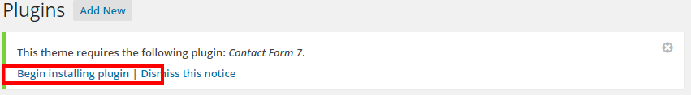
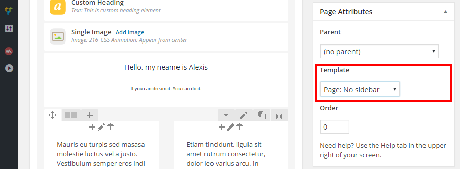
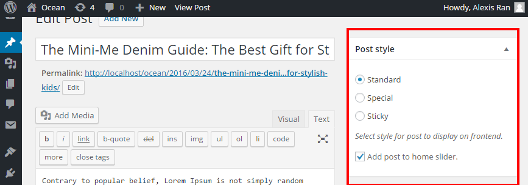
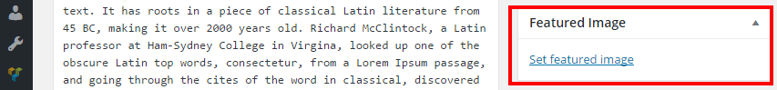
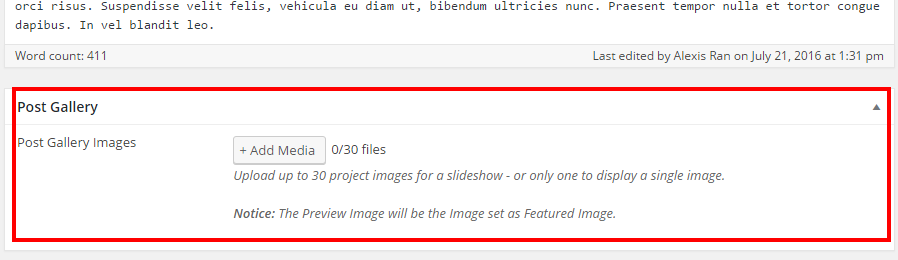
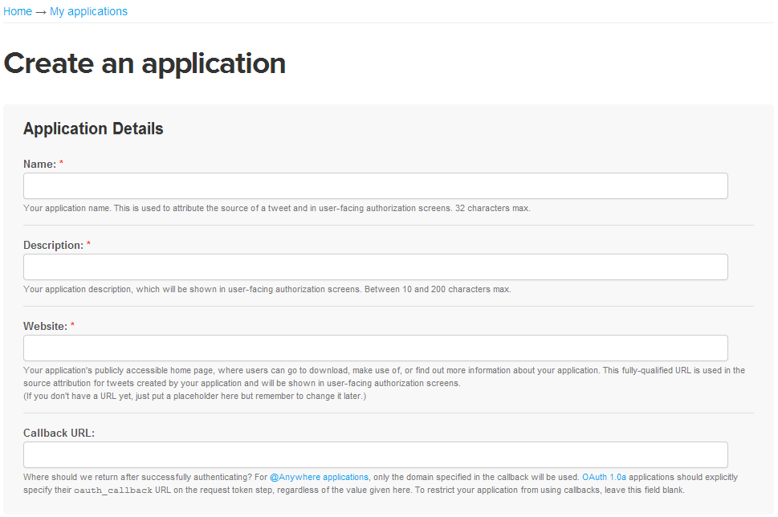
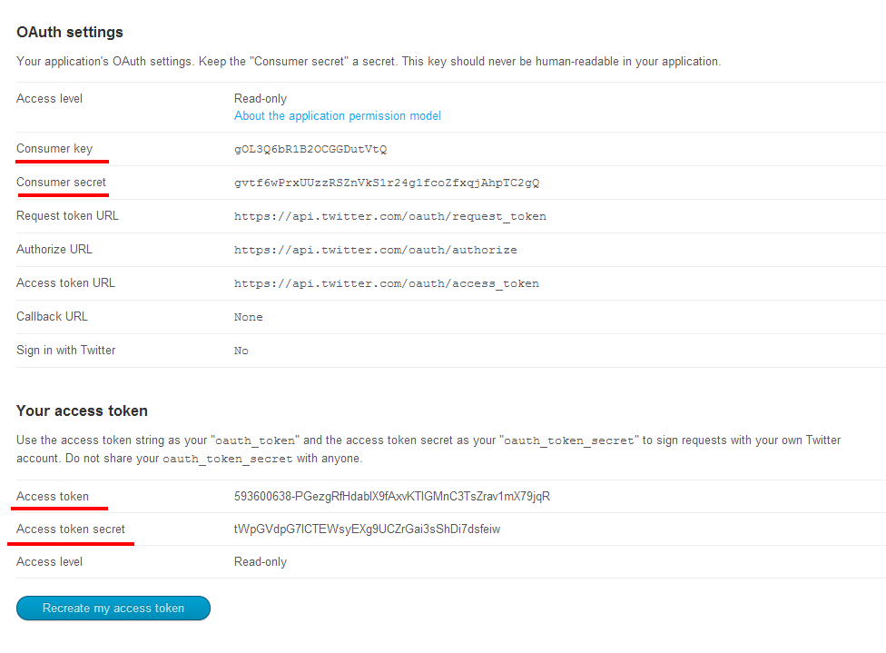

Thank you very much for purchasing our wordpress template. Providing our customers with excellent service has always been our first priority. So if you have any questions after reading this file, feel free to contact us. Our experienced support representatives will do whatever it takes to fix any problem that may come up. You can also reach us via themeforest with general questions about the theme. If you like the theme, please show your appreciation by taking the time to rate it in downloads section.
Please make sure the version of the WordPress engine on your site is 4.1 and up.
If the WordPress is not installed yet, please follow these instructions. You may check the requirements for WordPress using this link.
Please keep it mind that you can meet such issues while installing or setting up your theme: white screen, demo content fails when importing, and other similar issues. The matter is they are all related to low PHP configuration limits. The solution is to increase the PHP limits. You can do this on your own, or contact your web host and ask them to increase those limits to a minimum as follows:
To verify your current php configuration you need to install Wordpress phpinfo() plugin. Also, you can always contact your hosting provider. Please note though that many hosts will try to keep the PHP limits low without reason.
There are two ways you can install the theme:
FTP Upload:
Find "solien.zip" file in the unzipped package you download;
Unzip "solien.zip" file to get "solien" folder with theme files;
Access your server and upload "solien" folder into /wp-content/themes/ directory.
Wordpress Upload:
Navigate to Appearance -> Add New Themes -> Upload;
Select "solien.zip" file from the unzipped package you download;
Hit "Install Now" and the theme will be uploaded and installed.
Once you have uploaded the theme, you need to activate your theme in Dashboard -> Appearance -> Themes.
If you are experiencing any issues during the installation we would recommend to check out this Screencast by Envato
At this stage you should have noticed a warning, asking you to install recommended plugins. This is needed to make Contact Forms 7, Visual Composer, MailChimp work on your site.
You just need to click "begin installing plugins" and you will be redirected to the plugin installation page.

The latest versions of these plugins are included to theme’s package, "plugins" folder.
To update Visual Composer you can select one of two ways:
1)
2)
Contact Form 7 and MailChimp will inform you when updates available and you can update in the same way as standard wordpress plugin.
We are not always able to update the package the next minute a new version of included plugin is released. However, we always do our best to do that within the next few days. If it is critical for you to update the plugin asap, there is no problem to purchase own license for it.
If you are trying to insert the key/purchase code you got after buying our theme – this will not work.
We need to explain that since you didn’t purchase Visual Composer plugin itself, you will not be able to update it on your own.
But no worries, you still will receive plugin updates on regular basis included to our theme updates. We have no rights to share the purchase code, however we can provide the updates to our clients.
If you have ever purchased/downloaded Visual Composer Plugin, you were supposed to receive a licence key for it.
Demo content of our theme can be imported with the help of 'One Click Demo Import' plugin and dummy data file. Below you can find the instructions on how to do that.
How to manage plugins you can find here https://codex.wordpress.org/Managing_Plugins
There are multiple page layouts available in this theme. The list below describes each layout you can use to build any page for your needs.
Default Template
Default page template with a sidebar on the right side.
Page: Sidebar Left
Page template with a sidebar on the left side.
Page: No sidebar
Page template without a sidebar.
Page: Blog Masonry
Page with masonry layout for blog posts.

Theme supports three post styles such as: Standard, Special, Sticky.
You can easily set up one of the described posts styles, just select posts style regarding screenshot below.

If you need to show post thumbnail, you should set featured image.

You can add custom gallery to your post. Below the content editor you can find option to do that. Select or Upload images to this gallery and it will be shown at post single view.

Theme comes with 10 custom widgets:
All of the above widgets can be found in your WordPress Admin Area under Appearance > Widgets. Here you find several areas where you can drop the widgets. The "Blog Widgets" is the sidebar area of the Blog.
All of the widgets are very easy to set up. However we would like to show the example of setting up a widget on "asw-Twitter"
To setup twitter widget fields from above, follow steps below:


This theme comes with a powerful page building plugin - Visual Composer. Creating stunning pages and organizing content is pretty easy with this drag and drop page builder. Page composer are fully integrated and allows to add, edit, and manage the content on your beatiful site through visual and backend modes. Parameters of each shortcode come with description that appears in the dialog.
With our theme you can translate your site to any language or even multiple languages, it is 100% translation ready theme. It supports localization with .mo/.po language files, and has RTL built-in. Also it is fully compatible with qTranslate-x plugin, and finally: full WPML support allows you to create multilingual website.
Below is the information about how you can update your theme, our instructions, warnings, and recommendations.
The following things will NOT be affected if you update the theme:
Once again, thank you so much for purchasing our theme. We are sure you will be satisfied with your purchase. As it was mentioned at the beginning, we will take care about all the issues connected with this item. If you have a question about the theme, please feel free to email us at MontaukCo@gmail.com, visit our dedicated support forum, and check its faq's section where we have a lot of useful and important information.